Alternating Current Generators 3
Learning Outcome
When you complete this learning material, you will be able to:
Explain the construction and operating principles of Alternating Current (AC) generators.
Learning Objectives
You will specifically be able to complete the following tasks:
- 1. Explain the operating principles, design and construction of alternators with salient-pole and cylindrical rotors.
- 2. Explain the relationship between alternator speed, frequency, and number of pole pairs.
- 3. Describe the purpose and construction of an exciter.
- 4. Describe the purpose and design of voltage regulators used for an alternator.
- 5. Describe the cooling systems used for an alternator including circulating air cooling, hydrogen cooling, and stator winding cooling water systems.
- 6. Describe shaft sealing arrangements for an alternator.
- 7. Explain the theory and significance of alternator synchronization and parallel operation including the impact on power factor.
- 8. Explain efficiency and power losses in an AC generator.
Objective 1
Explain the operating principles, design and construction of alternators with salient-pole and cylindrical rotors.
Introduction
AC generators are often called alternators. Both DC and AC generators produce alternating current.
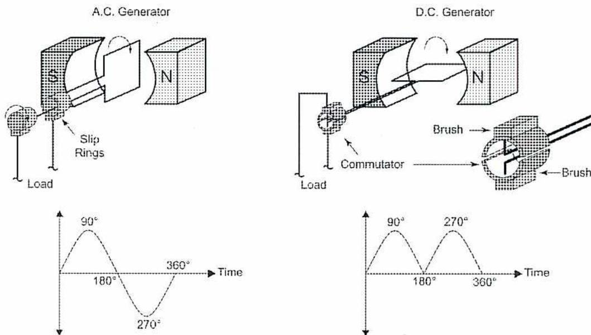
The figure illustrates two types of generators. On the left, an A.C. Generator is shown with a rectangular coil rotor between South (S) and North (N) magnetic poles. The rotor ends are connected to two separate slip rings. Brushes contact these rings to connect to a 'Load'. Below this is a graph of voltage vs. time showing a full sine wave cycle from 0° to 360°, with a positive peak at 90° and a negative peak at 270°. On the right, a D.C. Generator is shown with a similar rotor and poles, but the rotor ends connect to a split-ring commutator. Brushes contact the commutator to connect to a 'Load'. Below this is a graph showing a pulsating DC waveform where both half-cycles are positive, peaking at 90° and 270°.
Figure 1
Types of Generators
The main difference between the two types of generators is that the AC generator uses slip rings and the DC generator uses a commutator.
Fig. 1 shows the magnetic field to be stationary (stator) while the supply conductors rotate (rotor). This is not a practical design because it is difficult to deliver large amounts of power through slip rings or commutators. Fig. 2 shows a more practical generator where current supplied to the rotor creates the magnetic field. The supply conductors are wound on the stator.
The voltage output for any generator depends on the number of conductors, the length of the conductor, generator speed, and field strength. Remember, \( 10^8 \) lines cut per second or 1 Weber/second produces 1 volt.
Fig. 2(a) shows a simple drawing of the rotor and stator for a single phase alternator. Fig. 2(b) shows a 3-phase arrangement.
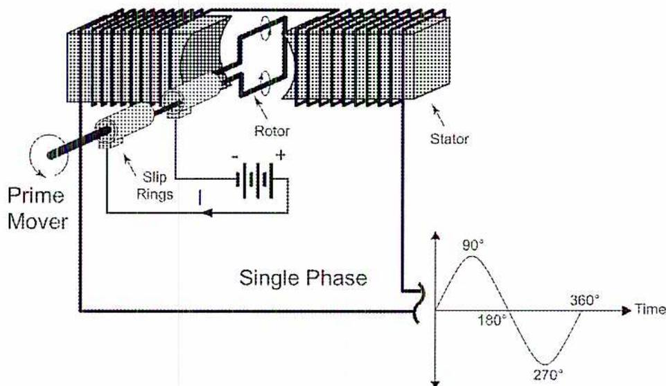
The diagram illustrates a single-phase alternator. A rotor with two poles is driven by a prime mover and connected to a DC excitation source via slip rings. The rotor is positioned between two stator windings. The output is a single-phase AC voltage, represented by a sine wave graph on the right. The graph shows the voltage waveform over one cycle (0° to 360°), with key points marked at 90° (positive peak), 180° (zero crossing), 270° (negative peak), and 360° (zero crossing).
Figure 2(a)
Single Phase Alternator
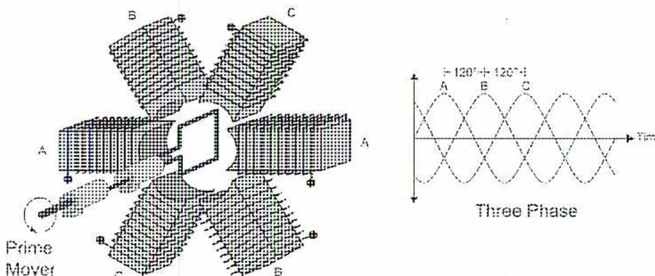
The diagram illustrates a three-phase alternator. The rotor is driven by a prime mover and has three stator windings labeled A, B, and C, which are spatially displaced by 120°. The output consists of three AC voltage waveforms, shown on the right, which are phase-shifted by 120° from each other. The graph shows three overlapping sine waves labeled A, B, and C. The phase shift is indicated by the formula \( \frac{120^\circ}{3} = 40^\circ \) and the text "120° + 120° = 240°".
Figure 2(b)
3-Phase Alternator
ALTERNATOR ROTORS
The purpose of the rotor is to produce the magnetic field necessary to induce voltage in the stator windings. The rotor becomes a large rotating electromagnet. There are two distinct types of AC generator field structures:
- • Salient-pole rotor
- • Cylindrical rotor
Salient-Pole
A salient rotor consists of several separately wound pole pieces, bolted to the frame of the rotor. These types of rotors are not suited for high speed applications because of the large centrifugal forces created by these protruding poles. Salient pole rotors are typically used in applications less than 1200 r/min. The field conductors are brought out to slip rings. A cross section diagram of a 4-pole salient-pole rotor is shown in Fig. 3.
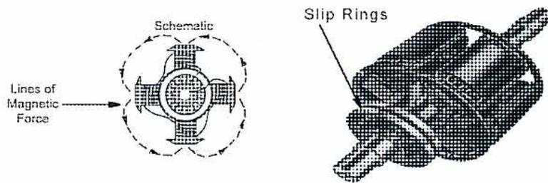
Figure 3 consists of two parts. On the left is a schematic cross-section of a 4-pole salient-pole rotor. It shows four distinct poles with windings, and dashed lines represent the 'Lines of Magnetic Force' circulating between them. On the right is a photograph of a physical rotor assembly, showing the protruding poles and three 'Slip Rings' mounted on the shaft behind them.
Figure 3
Salient Pole AC Generator
A photograph of a multi-pole, salient-pole rotor assembly manufactured by Ansaldo Energia is shown in Fig. 4.
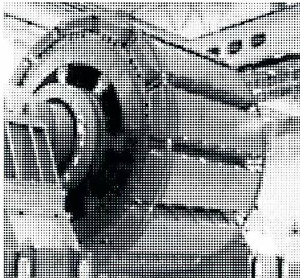
Figure 4 is a black and white photograph of a large, multi-pole salient-pole rotor assembly. The image shows several pairs of poles arranged around a central hub, with visible windings and structural components.
Figure 4
Multi-Pole Salient Pole Rotor Assembly
(Ansaldo Energia)
Cylindrical Rotors
Cylindrical rotors, shown in Fig. 5, are used in high speed applications such as steam or gas turbine driven alternators. The windings, arranged to form two or four distinct poles,
are firmly embedded in slots to withstand the tremendous centrifugal forces encountered at high speeds. The field conductors are brought out to the slip rings.
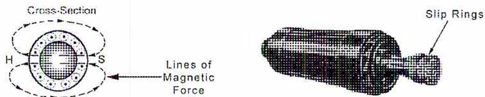
Figure 5
Cylindrical Rotor
A photograph of a large cylindrical rotor is shown in Fig. 6.
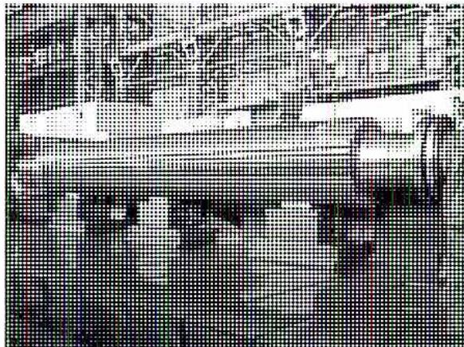
Figure 6
Large Cylindrical Rotor
Cylindrical rotors are made of solid steel forging which may, in the largest sizes, have a:
- • diameter of 1070 mm
- • body length of 6 m
- • shaft ends, an overall length of 10.5 m
- • mass of 50 or 60 tonnes
The body of the rotor is slotted to receive the windings. Steel retaining rings referred to as end caps or end bells, are shrunk on to hold the end windings in position against heavy centrifugal force. The rotor windings are copper strip insulated with micanite and held into the rotor slots against centrifugal force by steel wedges.
Fig. 7 gives a view of the rotor:
- (a) before winding
- (b) after winding and before fitting slot wedges and end bells
- (c) complete with end bells, fans and couplings
The rotor is wound as in (b) first. Note that it forms a concentric winding on each of the two rotor poles. Then, the slot wedges are fitted and finally the end bells are shrunk over the end turns so that they butt against the slotted rotor body and lock the wedges in position.
These end caps may be made of non-magnetic steel alloy to reduce the stray losses. British and European practice appears to favour magnetic steel because of its higher tensile strength.
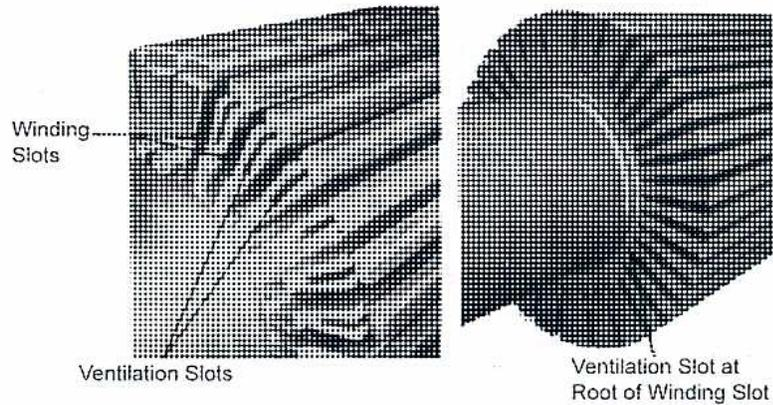
Figure 7A consists of two diagrams. The left diagram is a close-up view of a rotor surface, showing a series of parallel lines representing the winding slots and a series of smaller, perpendicular lines representing the ventilation slots. The right diagram is a cross-sectional view of the rotor, showing the internal structure of the slots. A label 'Ventilation Slot at Root of Winding Slot' points to a specific feature in the cross-section.
Figure 7A
Winding Slots and Ventilation Slots in Rotor
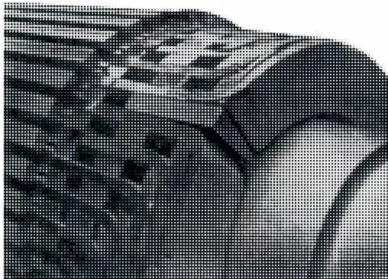
Figure 7B is a diagram showing the end winding of a rotor. It depicts a series of parallel lines representing the winding, with a curved, shaded area on the right representing the end winding. The end rings are not yet fitted, as indicated by the caption.
Figure 7B
End Winding Before Fitting End Rings
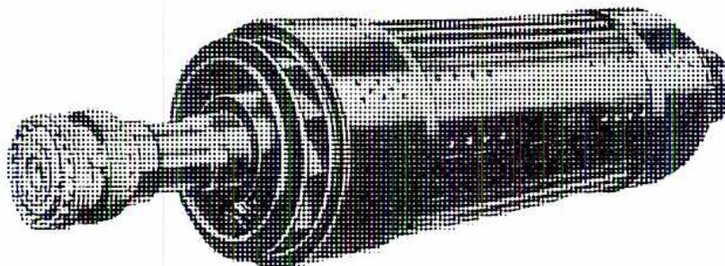
Figure 7C
Rotor Complete with Winding, End Bells, Fans and Couplings
Salient-pole rotors usually have a larger diameter than cylindrical rotors but are shorter along the axial length than cylindrical rotors.
Cylindrical rotor windings are usually designed with 2 or 4 poles and salient rotors are wound with many poles. Both types of generators are used to generate and supply 50 Hz or 60 Hz power.
The three main design constraints of alternator rotors are: temperature, centrifugal forces and insulation of the rotor conductors.
Stator
The stator windings deliver power to the connected electrical loads. Manufacturers of large alternators make the stator in two sections. This makes it easier to transport for initial installation and for subsequent maintenance. The stator core is usually constructed of laminated high quality magnetic silicon steel sheets. Both sides of each sheet are varnished to reduce magnetic and eddy current losses.
The stator windings are usually made of copper bars insulated with mica on glass fibre tape. The bars are firmly held in individual slots with wedges. The slots also allow cooling air or hydrogen gas to freely pass through and remove heat. Most stators use the lap winding design in which each turn passes twice across the armature surface, once under each pole, and the ends connect to the slip rings.
The conductor bars of large alternators are arranged to deliver 3-phase power. The ends of the conductor bars are brought out to output terminals and are arranged in either wye or delta configuration. Fig. 8 shows the stator assembly for 2500 kVA unit manufactured by Kato Engineering (USA).
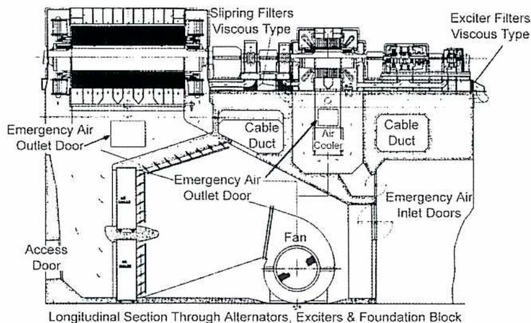
A grayscale, halftone-style photograph of a stator assembly. The assembly is circular with a central bore. It appears to be a cross-section or a view of the internal structure, showing various components like windings or slots. The image has a grainy, dotted texture characteristic of halftone printing.
Figure 8
Stator Assembly
Kato Engineering (USA)
The general trend in modern design is to employ techniques that ultimately deliver more power. In all cases, a single machine costs less than two smaller machines for the same power output. This applies to the construction and operating costs. The amount of heat that can be dissipated from the machine is the main limitation that determines a generator's output.
Objective 2
Explain the relationship between alternator speed, frequency, and number of pole pairs.
The formula that relates number of poles, speed and frequency is:
$$ f = \frac{pN}{60} $$
where
\(
f
\)
= frequency
\(
p
\)
= number of pairs of poles
\(
N
\)
= rotor speed in RPM
For example, a generator connected to a hydraulic turbine turns at a speed of 300r/min and generates 60 Hz power. The frequency formula for generators is:
$$ \begin{aligned} p &= \frac{f \times 60}{N} \\ &= \frac{60 \times 60}{300} \\ &= 12 \text{ pairs of poles} \end{aligned} $$
This is an application for a salient-pole machine.
It is not possible to construct a generator with less than 1 pole-pair ( i.e. 2 poles). If the above formula is considered, this fixes the maximum rotor speed of a 60 Hz AC generator at 3600 r/min. The speed of a 4-pole machine is fixed at 1800 r/min. 1800 r/min and 3600 r/min are typical speeds for cylindrical rotor machines.
Using the above formula, find the speed necessary for a 12 pole machine.
$$ \begin{aligned} f &= 60 \\ p &= 12 \\ f &= \frac{pN}{60} \end{aligned} $$
$$ \begin{aligned} 12N &= 3600 \\ N &= 300 \text{ r/min} \end{aligned} $$
60 Hz systems dictate the constant speed necessary for any given generator. This speed is known as synchronous speed. AC generators are often called synchronous generators. For example, the synchronous speed of a 2-pole generator is 3600 r/min; and for a 4-pole generator, 1800 r/min.
Objective 3
Describe the purpose and construction of an exciter.
EXCITER
An exciter supplies direct current to the alternator field windings to magnetize the rotating poles. The voltage produced by the exciter is controlled by a voltage regulator. There are two main ways of supplying DC voltage to the main field.
For example, a small DC generator with permanent magnets may be installed on the main rotor shaft. The residual magnetism allows some voltage and current to be generated as the generator comes up to speed. The output of the DC generator is supplied to the main rotor winding of the AC generator. This is known as self-excitation.
Fig. 9 shows a DC exciter generator connected to the rotor of a salient pole AC generator. The exciter is in the foreground of the photograph next to the salient-pole main generator.
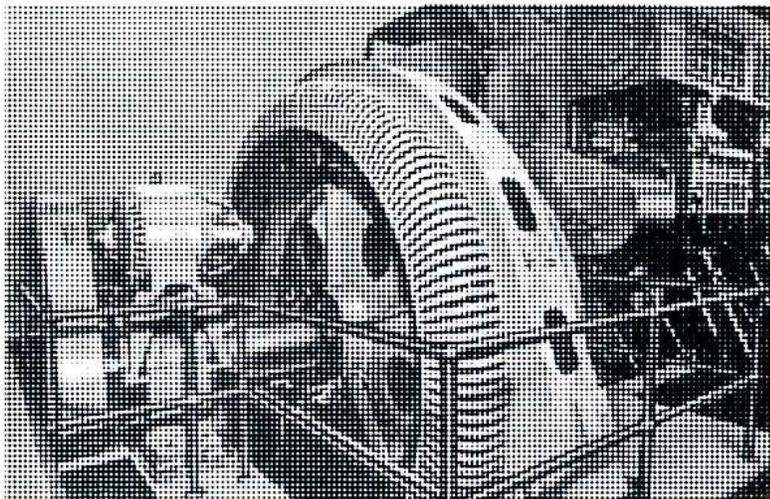
Figure 9
DC Exciter Generator
A separate DC supply bus is used in large power generating stations where there are several alternators operating in parallel. This is known as separate excitation. This system may be used so that if there is a failure of one alternator, other alternators may still use the DC bus for excitation.
The DC excitation voltage is supplied to the field of the main rotor through brushes and slip rings. These rings are often called collector rings. This method works well because the current and voltage requirements of the slip rings and brushes are quite small in comparison to the voltage and current output (KVA) of the main stator. Current methods of excitation use what is commonly called brushless excitation.
Brushless excitation replaces the need for collector rings and brushes and therefore requires less maintenance. Almost all modern synchronous generators use a brushless exciter, which is essentially a small AC generator on the main shaft. The AC voltage generated is rectified by a 3-phase rotating rectifier assembly also on the shaft. The DC voltage thus obtained is applied to the main generator field. A voltage regulator is provided to control the exciter field current. In this way, the field voltage can be precisely controlled, resulting in a stable, well-controlled generator output voltage.
Older model exciters use the conventional commutator to rectify the AC voltage. Modern exciters use solid state devices such as diodes, silicon controlled rectifiers (SCRs), or thyristors to rectify the voltage.
A diode consists of an anode and a cathode, as shown in Fig. 10(a). When AC voltage is applied to a diode, it only conducts half of the AC sinusoid, as shown in Fig. 10(b). A single diode provides DC voltage with significant ripples. Modern exciters are wound with 3-phase supply windings. Fig. 10(c) shows the diode arrangement that produces a DC voltage with very little ripple. The DC voltage is supplied to the rotor windings of the alternator. The arrangement shown in Fig. 10(c) is often called a rectifier bridge.
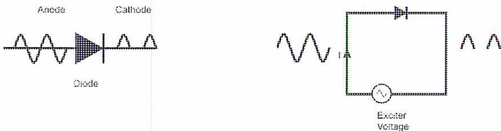
Figure 10a
Single Phase Diode
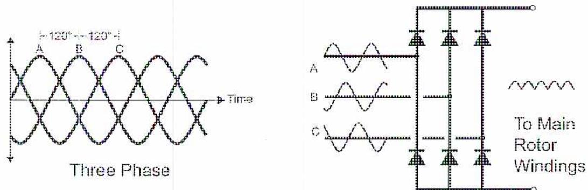
Figure 10b
Three Phase Diode
The sequence of operation for a brushless excitation system for a modern alternator is as follows. A simple schematic is shown in Fig. 11.
- 1. The residual magnetism that exists in the stationary exciter field generates an AC voltage in the 3-phase rotating exciter winding.
- 2. The rotating diode rectified bridge converts the exciter AC voltage to DC.
- 3. The DC voltage causes a DC current to flow through the rotating main field which creates the north and south poles necessary to induce voltage in the main stator windings.
- 4. Three-phase power is supplied from the main stator field.
- 5. The automatic voltage regulator (AVR) senses the voltage in the supply conductors. This will be lower than desired because the residual magnetism in the exciter stator field only produces a small amount current and therefore a small main field. The AVR converts AC alternator output voltage to DC and supplies current to the stationary exciter field. The amount of current supplied is proportional to the difference between the actual, or measured, output voltage and the desired output voltage.
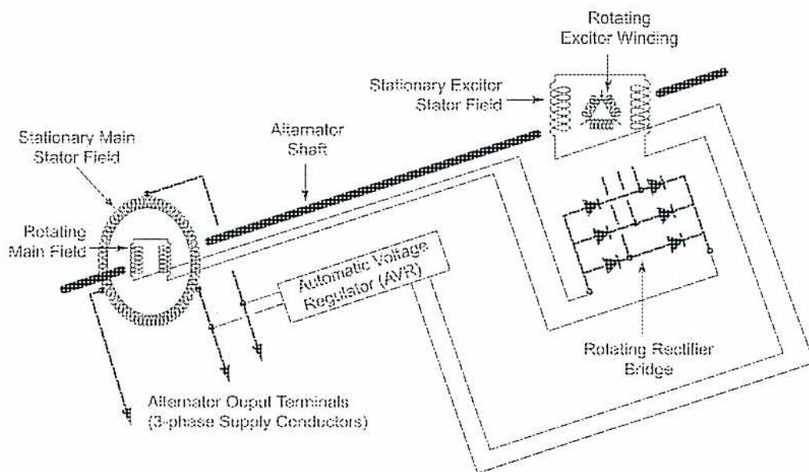
The diagram illustrates the components of a brushless excitation system. A central horizontal line represents the 'Alternator Shaft'. At the left end of the shaft is the 'Rotating Main Field' (rotor). Surrounding it is the 'Stationary Main Stator Field' (stator). Three output lines from the stator are labeled 'Alternator Output Terminals (3-phase Supply Conductors)'. Mounted on the shaft to the right of the main rotor is a 'Rotating Rectifier Bridge', shown as a box containing six diodes. Further right on the shaft is the 'Rotating Exciter Winding' (rotor). A 'Stationary Exciter Stator Field' (stator) is positioned around the exciter winding. An 'Automatic Voltage Regulator (AVR)' box is connected to the output terminals and to the stationary exciter stator field. Arrows indicate the flow of current from the AVR to the exciter stator field and from the exciter stator field to the rotating exciter winding.
Figure 11
Brushless Excitation System
Fig. 12 shows a rotating rectifier assembly attached to an alternator rotor. The three conductors from the rectifier diodes are visible as well as the two conductors that supply current to the main rotor field. Also visible are the salient poles of the rotating exciter windings.
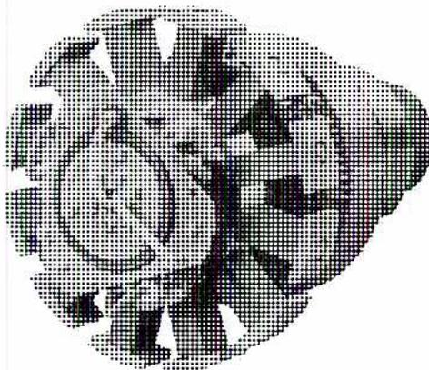
A black and white photograph showing a close-up of a rotating rectifier assembly. It features a circular arrangement of several power electronic components, likely thyristors or diodes, mounted on a common base. The components are arranged radially around a central point.
Figure 12
Rotating Rectifier Assembly
(Courtesy of Kato Engineering)
The excitation and automatic voltage regulator equipment is located in a separate cabinet at the shaft end of the alternator as shown in Fig. 13.
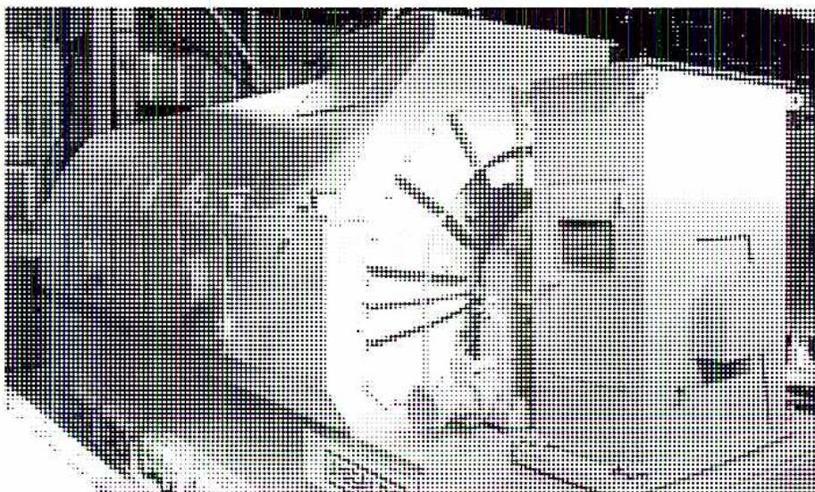
A black and white photograph of a large, rectangular industrial control cabinet. The cabinet has a light-colored front panel with various components mounted on it, including a large analog meter on the left and several smaller switches and indicators on the right. The cabinet is situated in an industrial environment with other equipment visible in the background.
Figure 13
Excitation and Automatic Voltage Regulator Equipment
(Courtesy of Ansaldo Energia – Italy)
Objective 4
Describe the purpose and design of voltage regulators used for an alternator.
VOLTAGE REGULATORS
Some means is required to automatically control the terminal voltage of the machine. AC machines have an inherently higher internal reactance than DC machines. Therefore, because of inferior voltage regulation, the need to develop automatic regulation equipment becomes very important.
Since the early days of automatic control, considerable research has been done into the design of electromagnetic voltage regulators. In the search for more rapid response and greater sensitivity, development has progressed into the electronic field, and most regulators use magnetic amplifying components.
The purpose of automatic regulator equipment is to:
- 1. Control the system voltage within prescribed limits.
- 2. Regulate the division of reactive power shared between machines running in parallel
- 3. Control the field circuit closely to keep the machine in synchronism with the system when operating at near unity or leading power factor.
- 4. Boost the excitation under system fault conditions to keep the machine in synchronism with the system.
The first two functions do not require any stringent design characteristics. The time of response or the presence of a dead band in the operation of the regulator is not important. Response time is the time required for the regulator to take action following the voltage range over which no regulator response is expected. Any good electromechanical design will meet these requirements.
Fig. 14 illustrates the effect of regulators with different response times on the restoration of normal voltage following a change in conditions.
![Figure 14: Restoration of Voltage as a Function of Response Time. A line graph showing Voltage on the y-axis and Time on the x-axis. Three curves are plotted: a solid line for 'Slow Response System', a dashed line for 'Moderate Response System', and a dash-dot line for 'Fast Response system'. All curves start at a point on the y-axis, drop slightly, and then rise back towards the initial voltage level. The 'Fast Response system' curve rises most quickly, followed by the 'Moderate Response System', and finally the 'Slow Response System'.](8ccbc9fa77bf60ba0ca0b79dec8681b8_img.jpg)
Figure 14
Restoration of Voltage as a Function of Response Time
However, the third and fourth functions demand a higher quality regulator. Equipment with a dead band feature will not meet the third condition. The fourth condition requires high sensitivity and a very high speed response.
Direct-Acting Rheostat Regulator
The operation of this type of regulator depends upon the adjustment of variable resistances in the field circuit of the main exciter. Early designs took the form of a carbon stack which was subject to variable pressure, and later developments included a form of rheostat with contacts rolling across a series of tappings.
Fig. 15 shows a voltage regulator of the direct-acting type using a stack of carbon resistance plates made by General Electric.
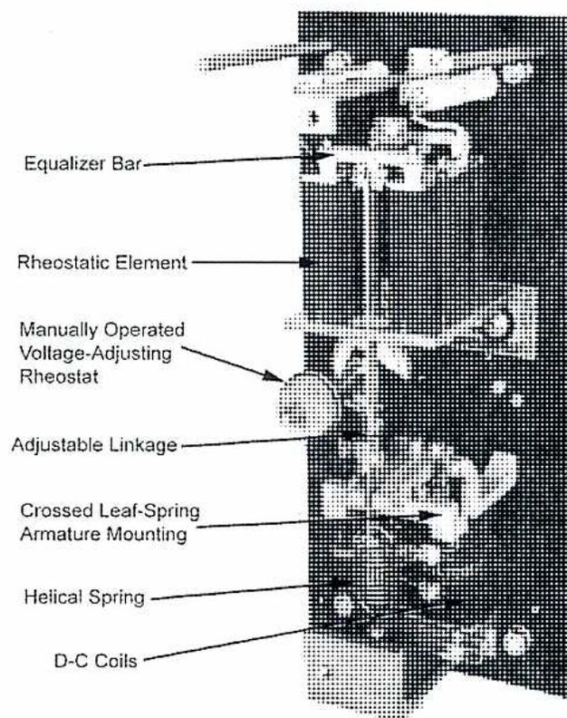
Figure 15
Direct-acting Generator Voltage Regulator
Fig. 16 illustrates the operating principle of a direct-acting regulator with rolling contacts. The two sectors, S1 and S2, are arranged so that clockwise movement of their pivots, P1 and P2, cause each of them to roll over a bank of contacts to increase the resistance in the exciter field circuit; anticlockwise movement results in a decrease of resistance. The movement of the pivots is controlled by the drum D which has a restraining torque exerted by springs and an operating torque derived from the machine terminal voltage.
![Figure 16: Principle of Direct-acting Rheostatic Regulator. The diagram shows a central rheostat assembly with a rotating armature (D) and stationary contacts (S1, S2). The armature is connected to a Voltage Transformer and a Generator. The Generator's output is connected to a Generator Field Winding and an Exciter Field Winding. The rheostat assembly includes two stationary resistor blocks (S1 and S2) and two sets of contacts (P1 and P2) on the armature. The armature is driven by a motor (not explicitly labeled but implied by the connection to the generator field winding).](b6671cfafda3820aafe9a24fa7a4d8c7_img.jpg)
Figure 16
Principle of Direct-acting Rheostatic Regulator
Silverstat Voltage Regulator
The Silverstat voltage regulator (Fig. 17) is a direct-acting rheostatic type of voltage regulator. It uses a series of silver-buttoned leaf springs (Fig. 18) which close or open their contacts in succession. The fixed ends of each leaf are insulated, one from the other, and connected to a tap on a stationary resistor block. An electromagnet acts against the opposing force of a coil spring to force the contacts open.
At high voltages, the magnetic force is sufficient to open all the silver contacts, causing maximum rheostat resistance. At low voltages, the spring force overcomes the weak magnetic pull. The spring then closes all the silver contacts, completely shorting out the rheostatic element. The large number of taps taken off the rheostatic element, coupled with the change in effective resistance between silvered surfaces as the contact pressure varies, ensures a smooth regulation of voltage.
The Silverstat voltage regulator uses a stabilizing transformer and a compensating circuit for parallel operation.
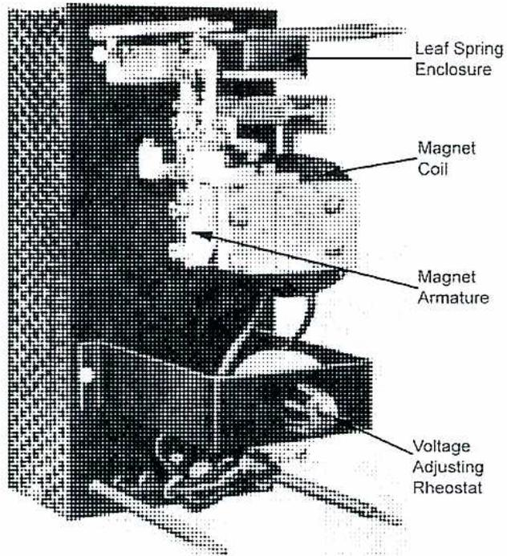
A black and white photograph showing the internal components of a Silverstat Voltage Regulator. The image is a close-up of a mechanical assembly. At the top, a rectangular metal box is labeled "Leaf Spring Enclosure". Below it, a cylindrical component is labeled "Magnet Coil". A flat, rectangular metal piece is labeled "Magnet Armature". At the bottom, a mechanical linkage with a screw-like adjustment is labeled "Voltage Adjusting Rheostat".
Figure 17
Silverstat Voltage Regulator
(Westinghouse)
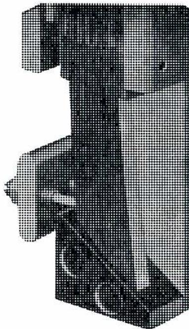
A black and white photograph showing a close-up of a mechanical assembly, specifically the leaf springs of a Silverstat. The image shows a vertical stack of several curved metal springs. The assembly is mounted on a dark, rectangular base. The springs are arranged in a way that suggests they are part of a larger mechanical system, likely the voltage regulator mentioned in the caption.
Figure 18
Silverstat Leaf Springs
Indirect-Acting Rheostatic Regulator
Fig. 19 is a photograph of an indirect-acting rheostat-type regulator made by Metropolitan Vickers.
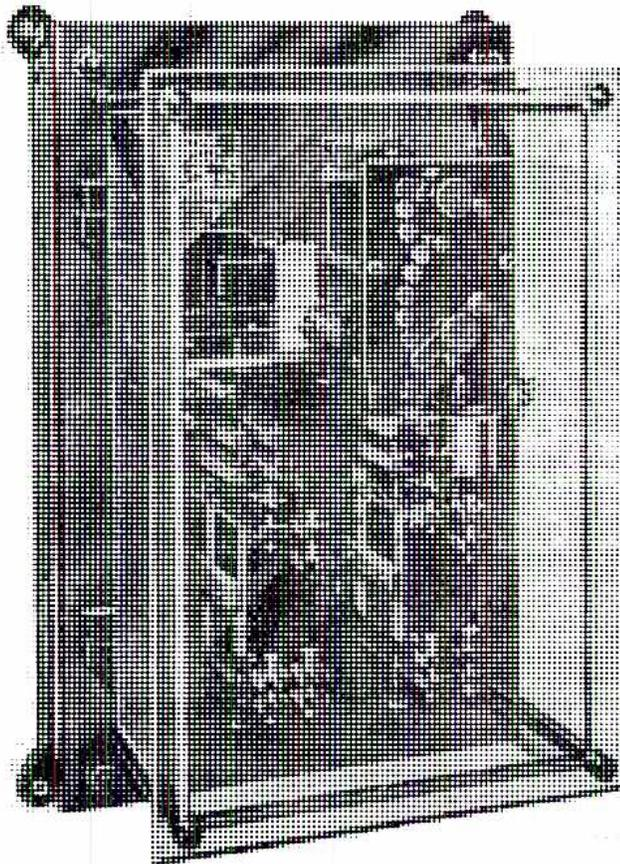
Figure 19
Indirect-Acting Regulator
Fig. 20 is a schematic diagram of the connections. The contacts W are continuously oscillated by the motor-driven cam. Under steady voltage conditions, no contact is made between W and 90R or 90L.
If the voltage changes, W makes intermittent contact with 90L to set up voltage-lowering conditions or with 90R to set up voltage-raising conditions. Hence, under abnormal conditions, the raise relay 90RR is pulsed for low voltage and the lower relay 90RL is pulsed for high-voltage conditions. Fig. 20 shows RR and RL contacts in the closed or open position when their respective relay coils are not energized.
![Figure 20: Indirect-Acting Regulator schematic diagram. The diagram shows a control coil rheostat connected to a regulated supply. A beam with a spring is connected to a motor (W) and a relay (90R, 90L). The relay is connected to a 'Raise' relay (90RR) and a 'Lower' relay (90RL). The 'Raise' relay has contacts 90RR-1, 90RR-2, and 90RR-3. The 'Lower' relay has contacts 90RL-1, 90RL-2, and 90RL-3. The 'Raise' relay is connected to a service exciter or station battery. The 'Lower' relay is connected to a service exciter or station battery. The beam is connected to a rheostat control motor.](c914f51f4427bc672dd0526cfc90ebe9_img.jpg)
Figure 20
Indirect-Acting Regulator
As shown in Fig. 21, under abnormal conditions, contacts 90RR1 AND 90RR2 or 90RL1 and 90RL2 vibrate in the field circuit to raise or lower the field current respectively.
At the same time, contacts 90RR3 and 90RR4 vibrate in the armature circuit of the rheostat control motor to give forward or backward movement of the motor.
![Figure 21: Indirect-Acting Regulator schematic diagram. The top part shows the exciter field circuit with an exciter field, an exciter field rheostat, and contacts 90RR-1, 90RR-2, 90RL-1, and 90RL-2. The bottom part shows the rheostat motor circuit with a rheostat motor field, a rheostat motor armature, and contacts 90RR-3 and 90RL-3. The rheostat motor field is connected to a service exciter or station battery. The rheostat motor armature is connected to the service exciter or station battery through the contacts 90RR-3 and 90RL-3.](844077b3034f0030b404207db0ad76b4_img.jpg)
Figure 21
Indirect-Acting Regulator
Electromechanical voltage regulators have the following disadvantages:
- • The response time of the regulator and the equipment necessary to change the voltage variation signal into a mechanical force and act on the main exciter field is too great.
- • The dead band is not acceptable for steady state conditions when generators are running near the stability limit.
- • As machines get larger in output, the increasing power in the excitation circuits is difficult and sometimes impossible for the regulator contacts to handle.
The trend in development is towards the production of equipment which does not have the above limitations. Therefore, the result has been to develop equipment which is more complicated, but which is proving to be more reliable than its electromechanical predecessors.
Electronic Regulators
The first development introduced electronic devices into the design. The early designs consisted of a bridge circuit with two fixed and two variable arms. The bridge was fed from the reference voltage and the other two bridge terminals gave the error voltage between the existing and the pre-arranged setting. The variable bridge arms consist of tungsten filament lamps, the response of which is a function of voltage. The error voltage from the bridge is fed into an electronic amplifier, which may take the form of a battery of thyratrons in series with the main exciter field. In this arrangement, the error is fed to the grid of the thyratrons and thus controls the field current flow.
An alternative arrangement is to feed the error voltage into an electronic amplifier in which the output anode circuits include the control fields of a rotary amplifier of the amplidyne type. This is connected to the field circuit of the main exciter and produces a positive or negative output in accordance with the requirements. Thus, if the generator voltage is above normal, the lamp resistance in the bridge circuit becomes greater than that of the linear bridge arms. The output of the bridge is amplified and is employed to reduce the main exciter field current and vice versa.
Various stabilizing circuits are necessary and involve the use of combinations of condensers and resistances. This type of regulator was developed at the same time as magnetic amplifiers, and in the majority of operation installations the amplidyne control field power is obtained from magnetic amplifiers.
The amplidyne amplifier, being a small DC machine, has an inherent possibility of failure; whereas the magnetic amplifier is a static piece of equipment and is considered to be more reliable.
Amplidyne
The amplidyne is a special type of motor generator which acts as a power amplifier. It has a separately excited field arranged so that the excitation power may be varied by a
small amount (called the input or control signal) thus causing a large variation in the output power. The power amplification obtained in this way may be as high as 250 000:1.
Fig. 22 shows two stages of power amplification through DC generators \( G_1 \) and \( G_2 \) .
If a DC generator is driven at constant speed, and if the magnetic circuit does not become saturated, the electrical power output of the generator is proportional to the electrical power input to the field. Any variations in field power are faithfully reproduced in the output circuit.
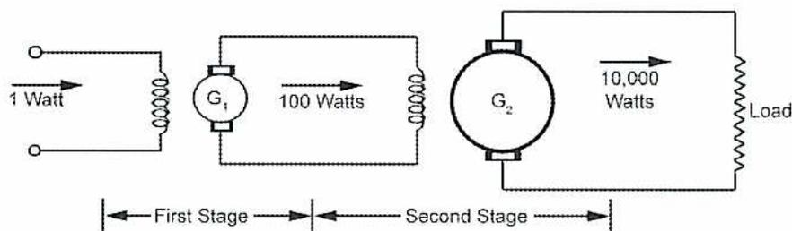
The diagram illustrates a two-stage power amplification system. It consists of two DC generators, \( G_1 \) and \( G_2 \) . The input signal (1 Watt) is applied to the field winding of \( G_1 \) . The output of \( G_1 \) (100 Watts) is then applied to the field winding of \( G_2 \) . The final output of \( G_2 \) (10,000 Watts) is connected to a 'Load'. The diagram is divided into 'First Stage' and 'Second Stage' by horizontal dimension lines below the circuit.
Figure 22
Two-stage Power Amplifier
A DC generator designed to absorb 1 watt in the field circuit might be expected to produce 100 watts output load. If a greater amplification is required, this output can be applied to the field of a second generator, as illustrated above, and another 100 : 1 ratio achieved, i.e. 10 000 : 1 power amplification in all.
One serious disadvantage of such a method is that the time taken to achieve the change in output is too great. The time delay on a two-stage amplification such as shown is about 1 second, and this is unacceptable for many control system applications.
The amplidyne is a DC generator of special design that combines in one machine a greater amplification than the two-stage amplifier shown above, together with ten or twenty times the speed of response.
Fig. 23 shows the field assembly of an amplidyne generator made by General Electric.
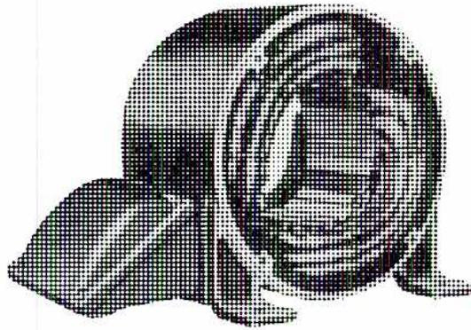
Figure 23
Field Assembly of an Amplidyne Generator
Fig. 24 represents an ordinary two-pole, separately excited DC generator. Supposing that the resistance \( R \) is 1 ohm and that the terminal voltage produced at the armature is 100 volts, the current \( I \) flowing in \( R \) will be
$$ \begin{aligned} I &= \frac{E}{R} \\ &= \frac{100}{1} \\ &= 100 \text{ A} \end{aligned} $$
The power required for the field might reasonably be 1% of the rated output, i.e. 100 watts. The flux produced in the poles by the field current is shown as \( Q_c \) ; the flux of armature reaction is \( Q_a \) . These two fluxes are at right angles to each other in the armature and are approximately equal if the generator is delivering 100 amps at 100 volts.
Suppose now that the resistance \( R \) is gradually reduced to zero, and the field current is reduced so as to keep the current flow through \( R \) at 100 amperes. It will be found that when \( R \) is zero, the field current required to circulate 100 amperes through the short-circuited armature winding is only about 5% of the field current required when terminal \( E \) is 100 volts.
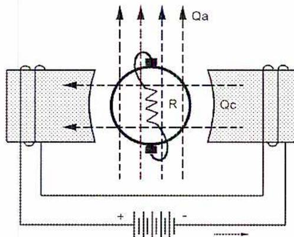
Figure 24
Amplidyne Generator armature and Control-Fields
Because the power input to the field coils varies as the square of the field current, this power input is now 5% of 5% of 100 watts or 0.25 watt. Thus, a field power input of 0.25 watts results in the production of a field \( Qa \) as powerful as the field produced directly by a field input of 100 watts. If this flux is used to generate a voltage and this voltage is applied to some external load, the overall power amplification is 400 times that of an ordinary DC generator, that is, a power amplification of 40 000 : 1.
The flux \( Qa \) can be utilized by placing two brushes midway between the short-circuited brushes, as shown in Fig. 25 and connecting these to the external load circuit.
![Diagram of an Amplitdyne generator showing the armature, stator windings, and electrical connections. The armature is a circle with four brushes. Two brushes on the left are connected together by a short-circuiting wire. Two brushes on the right are connected to an external 'To Load' circuit. The armature is surrounded by stator windings. Vertical arrows represent the main flux Qa. Horizontal arrows represent the control flux Qc. A 'To Control Field' input is shown at the bottom with '+' and '-' terminals.](52218820ae0a5a10bb2d604859f803e7_img.jpg)
Figure 25
Amplitdyne Generator Showing Load
Circuit and Control-Field Circuit
The \( E \) applied across the load is produced by the conductors cutting the vertical flux \( Qa \) ; the cutting of \( Qc \) does not contribute anything to this \( E \) . A generator excited in this way is called an armature reaction excited machine.
It is necessary to provide a compensating winding, placed in slots in the stator iron and connected in series with the load, to neutralize the armature reaction of the load current because this armature reaction is in direct opposition to \( Qc \) .
The wiring diagram of the Amplitdyne then becomes as shown in Fig. 26.
The high-speed response of the amplitdyne is made possible by the fact that its control field requires only about 1 or 2% of the number of ampere turns used on the field of an ordinary DC generator. Consequently, the inductance of its field winding is much smaller and the rate of change of the field current much more rapid.
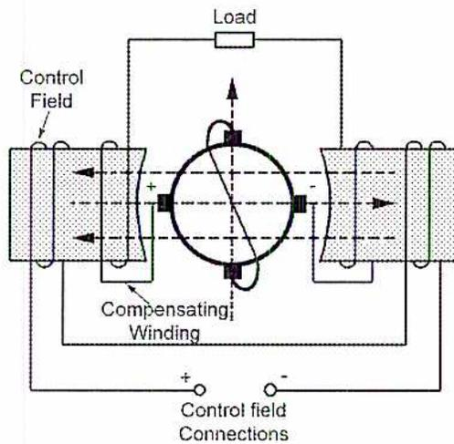
Figure 26
Amplitdyne Circuit Showing
the Compensating Winding
Fig. 27 shows two typical field connections using amplidynes.
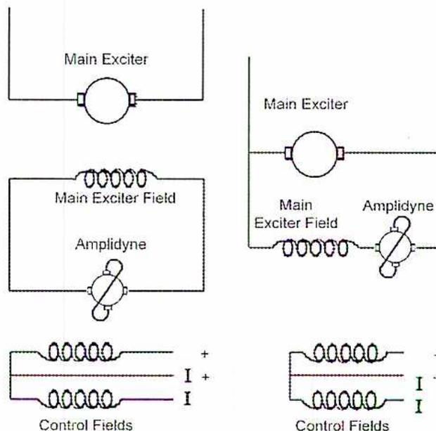
Figure 27
Amplitdyne Field Control Circuits
Magnetic Amplifier Regulator
To understand this type of regulator, it is necessary to be familiar with the mode of operation of a magnetic amplifier. It consists of windings on a core, the magnetic characteristics of which are very important. The permeability must be high and must be almost constant up to the saturation point. The ideal \( B \) - \( H \) characteristic ( \( B \) is flux density - \( H \) is magnetizing force) is illustrated in Fig. 28.

Figure 28
Ideal B-H characteristic for a Magnetic Amplifier Core
If two coils are wound on a core of this material, with one coil as a series impedance in an AC circuit and the other carrying direct current, impedance of the AC circuit can be varied by altering the current flowing in the DC coil. Consequently, by careful design, small variations in the control current (the name for direct current) can produce large changes of current in the a-c circuit. If the alternating current is rectified after passing through the amplifier windings, it becomes possible to produce large changes in direct current from small changes in another current.
The control winding of the magnetic amplifier is supplied by a voltage transformer connected to the generator terminals. The supply for exciting the machine is taken as a three-phase supply from a shaft alternator, which is connected in series with the AC windings of the magnetic amplifier, rectified, and connected in series with the main exciter field winding. Thus, changes in output voltage directly control the main field current.
The great advantages of this scheme are that there is a minimum of moving parts, no electronic components, the regulator is built entirely of static components, the time response is very rapid, and there is no dead band.
The regulator works from the difference between the generator terminal voltage and a fixed reference voltage derived from the pilot generator. The difference between these two voltages is amplified by magnetic amplifiers in cascade and is fed directly to correct the main exciter field current.
The normal DC pilot exciter is replaced by a 400 Hz self-excited pilot generator, the output being subsequently rectified to feed the main exciter winding. The higher frequency enables the magnetic amplifiers to give a much faster response and reduces the dimensions of the magnetic components. The output of the pilot generator is controlled by an induction regulator working in conjunction with magnetic amplifiers and the rectified output of the combination is fed into the field circuit of the generator. The induction regulator in this design replaces the conventional field rheostat.
Static Excitation System
An automatic voltage regulator (AVR) is a device that causes the excitation of the generator to be automatically increased or decreased so that the terminal voltage can be maintained within acceptable limits. The device must be able to detect a change in voltage and quickly respond to difference between the measured voltage and the desired voltage. Voltage regulation is expressed in percent by the following formula:
$$ \frac{(\text{No-load volts}) - (\text{Full-load volts})}{\text{Full-load volts}} \times 100 $$
Modern voltage regulators maintain voltage within \( \pm 1.5\% \) . Generator voltage regulators are classified by the means of operation.
Direct-acting rheostatic regulators adjust the field strength of a generator directly. This type of AVR was common in older generators. The rheostat varied the resistance and therefore the current, in the exciter circuit. By varying the current, the field strength in the generator is varied. The rheostat was manually operated but automated by using an electromagnet that varied the resistance based on the generator voltage.
The indirect acting rheostatic regulators use an auxiliary device, such as a motor, to operate the field rheostat.
Many older voltage regulators have been replaced by static excitation systems and digital voltage regulators.
As the name suggests, there are no moving parts in a static voltage regulator system. Fig. 29 shows a block diagram for a static excitation system and automatic voltage regulator. Initial voltage buildup in the generator is due to residual magnetism in the field. As voltage builds, a transformer is used to provide power from the generator output terminals to an automatic voltage regulator. Power from the generator terminals is also provided to a thyristor rectifier bridge. The AVR provides a signal to the gates on the thyristors, which modulate the DC voltage to the generator field.

Figure 29
Static Excitation System
Thyristors are similar to diodes but are designed with a gate that allows the amount of rectified DC voltage to be varied. This is shown in Fig. 30.
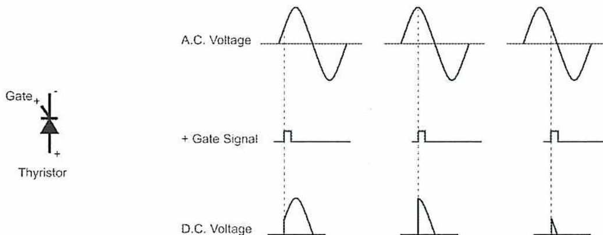
Figure 30
Thyristors
Objective 5
Describe the cooling systems used for an alternator including circulating air cooling, hydrogen cooling, and stator winding cooling water systems.
ALTERNATOR COOLING SYSTEMS
Cooling systems for alternators fall into the following fours types depending on the volt-amp output of the unit:
- • direct air
- • enclosed air
- • hydrogen
- • water
Direct Air Cooling
Small alternators use fans mounted on the rotor shaft. Ambient air is drawn in through one end of the frame and discharged out the opposite end. This type of cooling is not well suited for dusty environments. Fig. 31 shows a photograph of a small alternator. Notice the ventilation slots on each end of the frame.
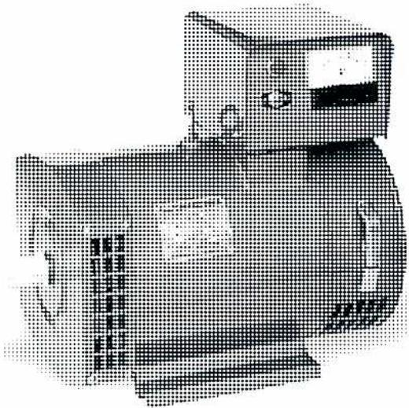
Figure 31
Small Alternator
In larger alternators, there are considerably higher \( I^{2}R \) losses and magnetic losses. These types of losses produce heat that must be properly dissipated. The physical size and structure of alternators are determined by the manner in which the machine is cooled.
Fig. 32 shows a side view of a generator with direct-cooling fans on both ends of the rotor. The top part of the drawing shows an end view of the two fans. The arrows on the drawing show the paths the cooling air takes.

Figure 32
Generator with Direct Cooling Fans
Enclosed Air Cooling
Air-cooled alternators are limited in size due to the inability of air to cool the rotor and stator to acceptable ranges. For larger generators, in the range of 25 to 325 MVA (mega-volt-amps), the generator is totally enclosed with separate fans supplying cooling air. Fig. 33 shows a side and end views of a typical air-cooled arrangement.
The air is filtered before it is supplied to the generator. Air from two fans is blown through air coolers into the stator and field windings and the exciter cabinet. Air return ducts are provided to guide the exhaust air back to the inlet of the fans.
The air coolers consist of finned tubes through which cooling water is circulated. The air is cooled as it is blown through channels between the finned tubes.
![Longitudinal Section Through Alternators, Exciters & Foundation Block. This technical diagram shows the internal air-cooling system of a generator. It features two main horizontal slots for the alternator and exciter windings. Air is drawn in through 'Emergency Air Inlet Doors' at the bottom right, passing through 'Cable Ducts' and an 'Air Cooler'. A 'Fan' is positioned at the bottom center to force air upwards. The air then exits through 'Emergency Air Outlet Doors' on the left side. Above the windings, 'Slipring Filters Viscous Type' and 'Exciter Filters Viscous Type' are shown. An 'Access Door' is located on the far left. The entire assembly is supported by a 'Foundation Block'.](fd955384881fd240be5518d3050588d9_img.jpg)
Figure 33
Arrangement of Alternator, Exciter and Sliprings Air-cooling System
Hydrogen Cooling
Hydrogen has properties that allow it to be a better coolant for larger alternators. Hydrogen is used on units that have a capacity in the range of 200 - 1000 MVA. The greater cooling ability of hydrogen vs. air allows for smaller physical dimensions of alternators. But, there is a greater cost associated with hydrogen cooling. Fig. 34 is a photograph of 1120 MVA hydrogen cooled generator manufactured by Toshiba Corporation.
The increase in rated output obtained with hydrogen gas can be 20% - 30% based on a hydrogen pressure of 3.5 kPa. Further increases can be realized with greater hydrogen pressure. Alternators are commonly operated at pressures of 100 kPa.
Hydrogen gas has several advantages over air:
- • High heat transfer coefficient, absorbs heat rapidly as it is flows through the generator windings
- • Rejects this same heat more rapidly in the cooling stages of the ventilation circuit
- • Less dense than air and requires less energy to drive it through the different generator components
- • Offers less braking effect (windage) to the rotating parts of the alternator.
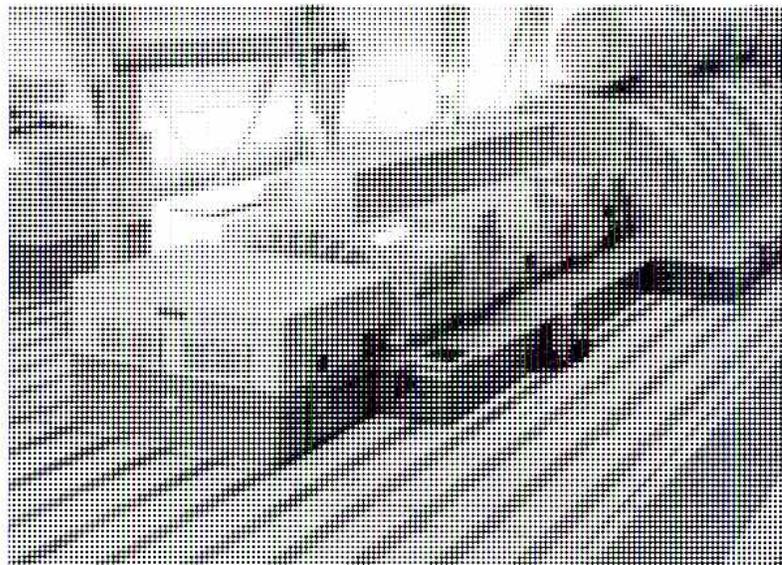
Figure 34
1120 MVA Hydrogen Cooled Generator
(Toshiba Corporation)
Overheating in generators can cause fires. This can be a serious problem with air ventilation systems since air supports combustion. The fire hazard with hydrogen is reduced. The airtight system prevents buildup of dirt that may cause fires.
The absence of air in the ventilation system also prevents the formation of acids that otherwise may attack the insulation on the rotor and stator windings.
However, there is a risk of explosion if hydrogen is mixed in the proper proportions with air. This is prevented by air tight casings and proper seals around the rotor shaft.
Hydrogen must be kept free from moisture because it increases the viscosity of the hydrogen and decreases its ability to carry away excess heat. Moisture also deteriorates the seals on the rotating shaft.
Normally, the hydrogen gas circulates in a closed loop through a water-cooled heat exchanger and a molecular sieve or desiccant dryer before returning to the generator enclosure.
Fig. 35 shows a schematic diagram of the equipment layout and piping diagram for a hydrogen cooling system.
| Symbol | Key to Symbols |
|---|---|
|
Image: Symbol for Shut-Off Valve: a circle with a diagonal line and a crossbar. |
Shut-Off Valve |
|
Image: Symbol for Non-Return Valve: a circle with a diagonal line and a triangle. |
Non-Return Valve |
|
Image: Symbol for Electrical Connections: a dashed line. |
Electrical Connections |
![Schematic diagram of a Hydrogen Cooled Generator System. The diagram shows the internal components of a generator and its external support systems. At the top, the generator housing contains a Perforated Hydrogen Admission Pipe, Gas Cooler, Alternator, Fan Pressure Chamber, and Seals. External to the housing are Sight Flow Gauges and Pressure Gauges. The oil system includes a Bearing Oil Supply Line, Thermometer, Oil Pressure Switch, Oil Filter, Starter Oil Pump, Emergency Oil Supply Line, and a Turbine Oil Tank with a Drain Valve. A Hydrogen Deaerating Tank is shown on the right with a float valve. The control system includes an Air Inlet Valve, Pressure Switch, Differential Pressure Gauge with Purity Scale, 30 inch Mercury 'U' Tube, Solenoid Valve, and Manually Operated By-Pass Valve. Gas supply lines from Hydrogen Cylinders and Carbon Dioxide Cylinders are connected to a Pressure Release Valve and lead To Atmosphere Outside of Building. Various other components like Liquid Alarm Devices and Relief Valves are also indicated.](5b4e774d63e0e0ed73801a9247755e5f_img.jpg)
Figure 35A
Hydrogen Cooled Generator System
![Diagram of a hydrogen-cooled generator system showing water cooling loops. On the left, an 'End View' shows 'Gas Coolers' connected to 'Inlet Manifold' and 'Outlet Manifold'. The 'Inlet Manifold' connects to 'Distilled Water In' which goes to 'Heat Exchangers'. 'Heat Exchangers' have 'River Water In' from a 'Duplex Strainer' and 'River Water Out' to a 'Water Head Tank'. 'Distilled Water Out' from the heat exchangers goes to the 'Outlet Manifold'. 'Automatic Distilled Water Make-Up' feeds the 'Water Head Tank'. 'Overflow' from the tank goes to 'Distilled Water In' before the heat exchangers. Two pumps, 'Distilled Water Pump' and 'Make-Up Water Pump', are shown in the 'Distilled Water In' line.](d4af765160d04ecef538e5066006dc77_img.jpg)
Figure 35B
End View of Hydrogen Cooled Generator System
The gas flow paths for hydrogen cooling vary with manufacturers' designs. In some cases, the gas enters at each end of the rotor and leaves at the centre. Other designs have the gas enter one end and exit at the opposite end. Some manufacturers allow the gas to enter special rotor ventilation slots and then escape radially through slotted conductors.
Water Cooling
Some alternator designs use water to cool the stator windings. In this design the water is circulated through hollow conductors. Usually pure water such as deionized water is used. The cool water enters the winding through a distribution header at one end of the generator and the warm water is discharged at the opposite end.
Cooling water cooling systems are more complex and more costly than conventional systems. However, at higher ratings, this cost is offset by a significantly smaller physical size.
Fig. 36 shows the water-cooling ducts around the stator frame and stator windings in a generator manufactured by Alsaldio Energia of Italy.

Figure 36
Generator Water-Cooling Ducts
(Alsaldo Energia-Italy)
The stator windings, shown in Fig. 36, are made up of hollow non-magnetic stainless steel conductors that carry the cooling water. These hollow conductors are manufactured from solid conductor material to make the bars that carry the stator current.
Objective 6
Describe shaft sealing arrangements for an alternator.
SHAFT SEALING ARRANGEMENTS
Hydrogen cooled machines must have seals on the rotor shaft to prevent gas from leaking outwards. Fig. 37 shows a radial clearance type that prevents gas from escaping along the radial circumference of the shaft. Note how it is fitted with the shaft journal.
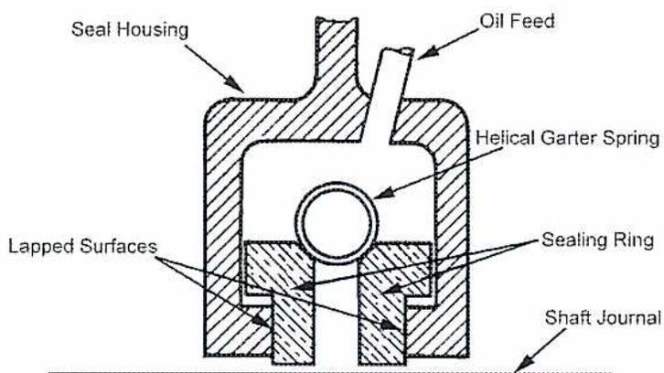
This cross-sectional diagram illustrates a radial clearance type shaft seal. A central shaft journal is shown at the bottom. A sealing ring is mounted on the journal, held in place by a helical garter spring. The sealing ring is in contact with lapped surfaces on a stationary seal housing. An oil feed line is shown entering the seal housing to provide lubrication.
Figure 37
Radial Clearance Type Shaft Seal
Fig. 38 shows an axial clearance type that fits against the shaft. This type of seal prevents gases from escaping radially from the shaft.

This cross-sectional diagram shows an axial clearance type shaft seal. A shaft collar is mounted on the shaft. A sealing ring is positioned against the collar, held by helical springs. The sealing ring has a white-metal face that creates a seal against the seal housing. An oil feed is provided to the sealing area.
Figure 38
Axial Clearance Type Shaft Seal
Fig. 39 shows a thrust ring type. These seals are designed to move slightly to compensate for the radial and axial forces (thrust) that the shaft experiences as it rotates from stopped to a full-load speed.
![Cross-sectional diagram of a thrust ring type shaft seal for a hydrogen-cooled alternator. The diagram shows the rotor shaft, stator end cover, and various seal components. On the left, the hydrogen-filled stator cavity is separated from the external environment by a series of seals: an expansion element, a wiper, and a cup packing seal ring. The main seal assembly on the right consists of a seal housing, a seal retaining pin, a spherical seat, a cup packing seal ring, an oil seal pad, an oil seal collar, and a seal ring. The seal housing is mounted on the bearing housing. Labels include: Stator End Cover, Gas Tight Joint, Hydrogen, Expansion Element, Wiper, Rotor Shaft, Cup Packing Seal Ring, Seal Housing, Seal Retaining Pin, Spherical Seat, Cup Packing Seal Ring, Oil Seal Pad, Oil Seal Collar, and Seal Ring.](662933fe00899933b36b5a214ac6095c_img.jpg)
Figure 39
Thrust Ring Type Shaft Seal
The seals prevent hydrogen from escaping outwards by forcing oil inwards against the seal. Seal oil is circulated from the main machine lubricating oil system, through the seals, to the hydrogen detraining tanks and then back to the main oil tank. The hydrogen detraining tanks allow any gas that may become entrained with the circulated oil to be removed before it is returned to the main storage tank. Fig. 40 shows the equipment and piping layout for a seal-oil system for a hydrogen cooled alternator.
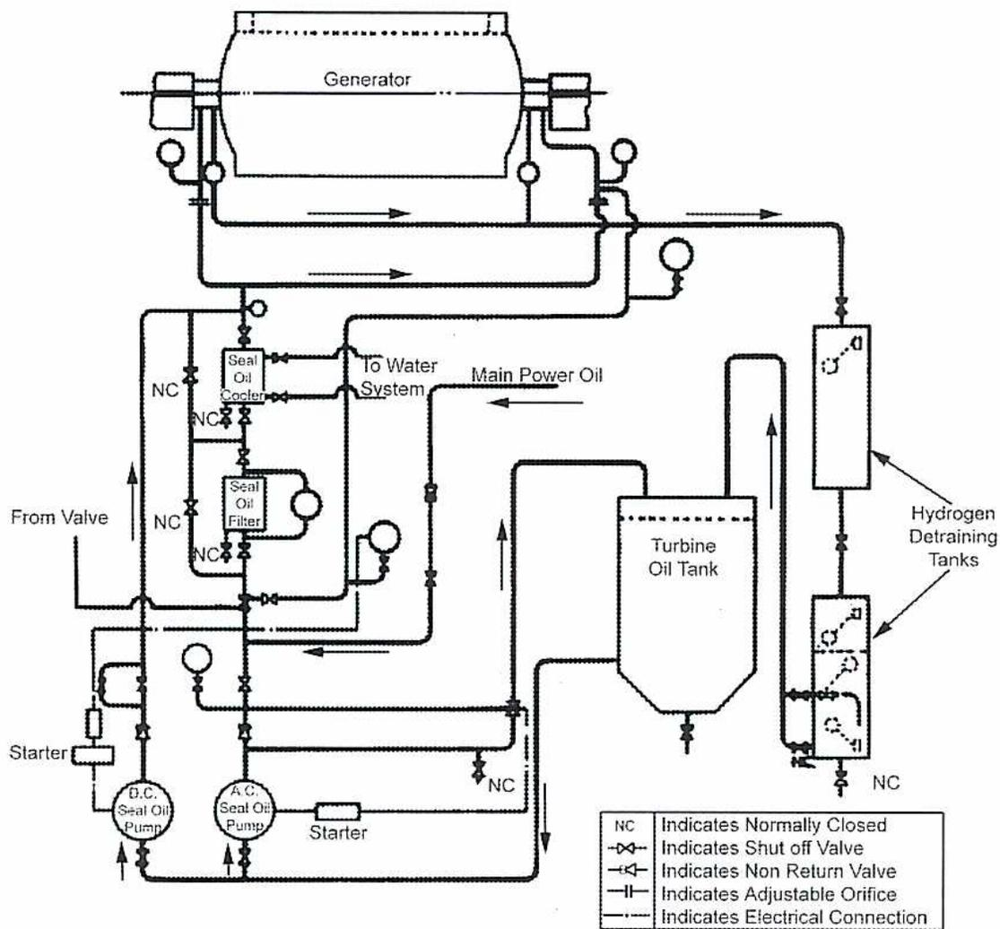
The diagram illustrates the seal oil system for an H 2 cooled alternator. At the top, the Generator is shown with oil lines entering from the bottom. The oil flows through a series of components: a Seal Oil Cooler (connected to a To Water System ), a Seal Oil Filter , and then splits into two pumps: a D.C. Seal Oil Pump and an A.C. Seal Oil Pump . Both pumps are connected to a Starter . The oil from the pumps returns to the Turbine Oil Tank . A line labeled Main Power Oil also connects to the Turbine Oil Tank. On the right side, there are two Hydrogen Detaining Tanks connected to the system. Various valves are indicated with symbols: NC (Normally Closed), Shut off Valve (X symbol), Non Return Valve (checkmark symbol), and Adjustable Orifice (two parallel lines symbol). Electrical connections are shown with dashed lines.
| NC | Indicates Normally Closed |
| Indicates Shut off Valve | |
| Indicates Non Return Valve | |
| Indicates Adjustable Orifice | |
| - - - | Indicates Electrical Connection |
Figure 40
Seal Oil System for H
2
Cooled Alternator
Objective 7
Explain the theory and significance of alternator synchronization and parallel operation including the impact on power factor.
POWER FACTOR
The power factor (pf) of the system supplied by the generators is determined by the characteristics of the load connected. In the case where one alternator only supplies the load, its power factor is also that of the load.
Where two or more alternators supply a system (by far the more common case), the pf of each can be controlled individually by altering of its excitation.
If the generator is under excited, its pf becomes leading and the current output again increases without change in kW output.
Control of alternator pf is usually carried out by hand operation of a trimming resistance in the voltage regulator circuit.
PARALLEL OPERATION
If the excitation of a generator operating in parallel with others is increased beyond the amount required to give normal terminal voltage for the load condition, its pf will change in the lagging direction. Its current output increases without appreciable change in kW load output.
Synchronizing
Alternating-current power systems consist of several generating machines connected in parallel to common bus bars which supply the system load. Moreover it is common to have interconnection between local systems through transmission lines. Thus, any generator which is to be switched into the system must fulfill the following synchronizing conditions.
Condition 1
The alternator terminal voltage must equal that of the system. This condition is fulfilled by adjusting the alternator-field rheostat after running the machine up to approximately full speed, until the terminal voltage matches the system voltage. Implicit in this condition is also a demand that the shape of the incoming machine voltage wave will correspond closely with that of the system.
Condition 2
The alternator frequency must approach that of the system within close limits. The alternator frequency is controlled by adjusting the speed of the prime mover. In most cases this means control of steam supply to the turbine.
Condition 3
Phase rotations of alternator and system must be the same. That is, if the system bus bars are designated red, white and blue and the maximum of the voltage waves of these three phases occur in the sequence red, white, blue, then the incoming machine (which is to be connected red to red, blue to blue, etc.) must also have voltage maximums occurring in the phase sequence red, white, blue.
This condition can be checked by lamps or a phase rotation meter. This condition can only be altered by disconnection so that once the phase rotation of a generator is proved correct with relation to the system, it will not be necessary to repeat the test. Normal switching on and off load is carried out without changing the generator phase rotation.
The series of operations required to bring about the above conditions and to close the switch are known as synchronizing . The process of synchronizing may be illustrated by the following diagrams of the incoming machine and the system voltage waves, as shown on Fig. 41.
Fig. 41(a) shows the existing system voltage wave (one phase only shown).
Referring to Fig. 41(b), the machine voltage wave is shown dotted and is out of phase and frequency.
The generator's output voltage is slowly increased to equal the system's maximum voltage. This is accomplished by adjusting the field rheostat.
Fig. 41(c) shows that the machine and system voltages are now equal. The voltages are out of phase but the frequency is being increased by increasing the speed of the prime mover.
In Fig. 41(d), the machine and system:
- • voltages are equal
- • frequencies are equal
- • are both in phase
The synchroscope shows 12 o'clock and the switch can now be closed.

(a) Existing system voltage wave. (One phase only shown.)
(b) Machine voltage wave shown dotted. Out of phase and frequency. Being built up to equal the system max. volts by adjustment of field rheostat.
(c) Machine voltage now equal to system. Voltage waves out of phase but frequency being increased by increasing speed of prime mover.
(d) Machine voltage now equal to system, in phase and with equal frequency. Synchroscope shows 12 o'clock. Switch can now be closed.
Figure 41
Steps Taken to Synchronize an Incoming A-C Generator to the Supply System
Fig. 42 shows one method of phasing out polyphase alternators. If the phase rotation is correct on the incoming alternator, the lights will all be dark or bright simultaneously. If the phase rotation is wrong, the lights will never all be bright or dark at the same time.
The phase rotation may also be checked with a small polyphase induction motor, connected alternately to the system and the incoming machine, as shown in Fig. 43. If the direction of rotation of the motor is the same for both incoming alternator and system, then the phase rotation is the same.
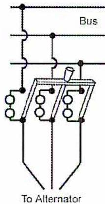
Figure 42
Phasing Out Polyphase Alternators

Figure 43
Checking of Phase Rotation
Condition 4
The alternator voltage must be in correct phase relationship with the system, that is, both reach maximum at the same instant. Synchronizing the phase relationship of incoming machine and the system requires the use of a synchronizing device such as an indicator, which may be a bank of lamps or a synchroscope. Modern large machines always use the latter because indication by lamps is not accurate enough.
If lamps are used for synchronizing, they are connected as in Fig. 44.
Assuming that phase rotation has been checked and is correct and that the machine is at full-volts and close to synchronizing speed, the remaining small difference in frequency between incoming machine and system causes varying displacement between the two sets of voltages.
If lamp indication is being used on all three phases, all lamps will become bright and dark together. As the voltages of alternator and system become more nearly in step, the
flickering becomes slower. The main switch may be closed when all lamps are dark. It is always good practice to close the switch at a time when the incoming machine speed is increasing because this machine tends to pick up a little load and is more stable in operation.
![Diagram of a three-phase synchronization setup using lamps. A horizontal line at the top is labeled 'Bus'. Below it, three vertical lines represent the phases. On the left, three lamps are connected in series between the bus and the alternator. On the right, a three-phase switch is shown, with its output lines labeled 'To Alternator'. The switch is connected to the bus through three vertical lines. The diagram illustrates the connection of lamps and a switch for synchronizing an alternator with a bus system.](365b54f616aff249b4e6c0edafdcb9b3_img.jpg)
Figure 44
Synchronizing With Lamps
The synchroscope gives a much clearer picture of the phase relationship between the two voltages (incoming machine and system). Rotation of the indicating pointer in the direction marked fast shows the incoming machine frequency to be faster than the system and vice versa. If the frequency of the incoming machine is equal to the system frequency, the pointer will not revolve.
Its position relative to 12 o'clock indicates the angle of phase displacement between incoming machine and system in electrical degrees. The incoming machine should be paralleled at the instant the synchroscope pointer passes the zero (12 o'clock) position while revolving slowly in the fast direction.
Once paralleled the pointer no longer revolves. So to prevent overheating of its coils, the synchroscope is switched off when not in use.
The synchroscope operates by the interaction of magnetic fields from two circuits, one connected to the alternator and one to the system upon a soft iron vane or disc with the pointer attached.
Many modern alternators are fitted with automatic synchronizing equipment. The basic operating principle is that agreement between coils supplied from alternator and system produces sufficient field strength to operate a switch-closing relay.
Power Factor Control
When two alternators are running in parallel, a transfer of load between them results in a voltage differential. The alternator with the reduced kilowatt loading has its internal voltage increased because of the lessened voltage drops within its stator windings. Hence, the machine is said to be over-excited for the new value of load. The alternator with the increased kW loading has its internal voltage decreased because of the increased voltage drops in the stator. Hence this machine is said to be under-excited for the new value of load.
If the pf of the system is unity, this voltage differential causes reactive cross-current between the machines. If the system pf is lagging however, the effect is to cause a disproportionate division of reactive power between the alternators. The over-excited machine will supply more Vars (volt-amps reactive) than the under-excited machine. A pf meter would show lagging on the over-excited machine and leading on the under-excited machine.
The balancing of Vars between the machines is accomplished by adjusting the field excitation of each machine.
The field rheostat of the under-excited machine is turned in the raise voltage direction, and field rheostat of the over-excited machine is turned in the lower voltage direction until the kVA meter indication or the pf meter indication is the same on each machine.
Objective 8
Explain efficiency and power losses in AC generators.
AC GENERATOR EFFICIENCY AND LOSSES
The voltage at the terminals of an alternator is affected considerably by the pf of the load it is supplying. For this reason the rated voltage, stated on the nameplate, is always given for rated kVA at a specific pf and field current.
The average-system load includes induction, resistance and some capacitance and is between unity and 0.8 lagging. Alternators for general service usually have the terminal voltage for rated kVA at 0.8 pf lagging stamped upon the nameplate.
The short-circuit ratio is often included in the nameplate data. This gives an indication of the design of the machine with regard to the quantity of copper and iron in the electrical and magnetic parts. The machine with high short-circuit ratio will contain more materials.
Short-circuit ratio is defined as the ratio of the field current required to produce rated voltage at rated speed and no-load to the field current required to circulate rated stator current when operating at rated speed under sustained short-circuit conditions. The standard figure quoted for a turbo-alternator is between 0.8 and 1.0.
The affect of high short-circuit ratio in the design of an alternator gives it improved stability at times of load changes.
Alternator efficiency is dependent upon the losses in the machine. Not all of the power input to a generator does useful work. Some of the energy input is lost as:
- • friction
- • windage
- • \( I^2R \) losses in the stator and field windings
- • hysteresis and eddy current losses in the iron of the stator and rotor field circuits
The efficiency of an alternator operating at 0.8 lagging pf can be expected to reach 98%.
Chapter Questions
B3.3
- 1. With the aid of simple sketches, explain the differences between AC and DC generators.
- 2. Explain the relationship between alternator speed, frequency, and number of pole pairs.
- 3. With the aid of a simple sketch, explain the sequence of operation for a brushless excitation system for a modern alternator.
- 4. With the aid of a simple sketch, explain the operating principle of a direct-acting type of regulator with rolling contacts.
- 5. Explain the advantages hydrogen cooling has over air cooling for alternators.
- 6. With the aid of a simple sketch, describe the seal oil system that is used for a hydrogen cooled alternator.
- 7. With the aid of a simple sketch, explain the steps that are taken to synchronize an incoming AC generator to the supply system.